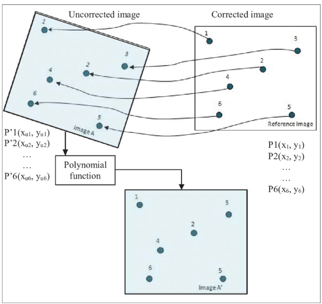
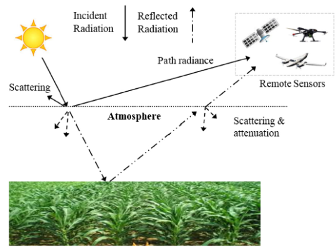
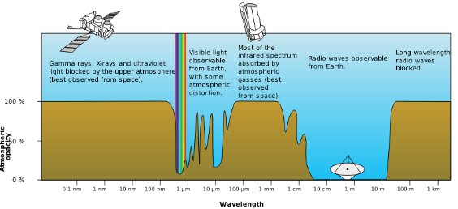
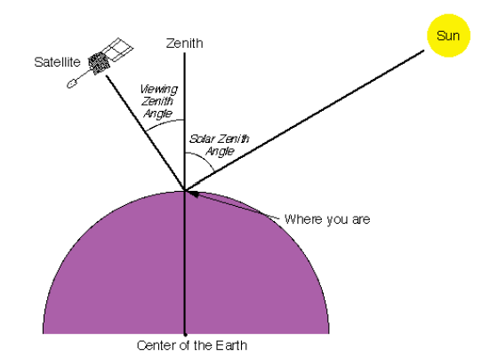

3 Week 3: Remote sensing data
This is the learning diary for week three, finding how to get a better image from remotely sensed data.
3.1 Summary
3.1.1 Corrections
- Geometric correction

Solution 1: identify Ground Control Points (GPS) to match known points in the image and a reference dataset, take the coordinates and model them to give geometric transformation coefficients
- GCP: ground control point
Solution 2: RMSE
- Atmospheric correction (remove the effect of atmosphere)
two sources of environmental attenuation: Atmospheric scattering, Topographic attenuation
Relative
Dark object subtraction (DOS): Searches each band for the darkest value then subtracts that from each pixel
Psuedo-invariant Features (PIFs): Assume brightness pixels linearly related to a base image(e.g. the centre point of the pixel), adjust the image based on the regression result, apply it to the rest of the pixels
Absolute
Change digital brightness values into scaled surface reflectance. We can then compare these scaled surface reflectance values across the planet by atmospheric radiative transfer models
Empirical Line Correction
take measurements in situ using a field spectrometer, which require measurements at the same time as the satellite overpass
Then use these measurements in linear regression against the satellite data raw digital number
Path radiance: radiance reflected above the surface (e.g. scattering)

Figure 3.2: radiance reflect, Source: Remote Sensing in Precision Agriculture - Atmospheric attenuation: absorption of EMR due to materials in atmosphere (e.g. water vapour)

Figure 3.3: Atmospheric attenuation, Source: GIS geography
- Orthorectification correction (i.e topographic correction)
- orthorectification = removing distortions (view staight down)

- Radiometric Calibration
- Sensors capture image brightness and distributed as a Digital Number (or DN)
3.1.2 Data joining and enhancement
- Joining data sets
feather the images together and then creates a seamless mosaic or image(s)
Within the overlap area an representative sample is taken
A histogram is extracted from the base image
It is then applied to image to using a histogram matching algorithm
- Image enhancement
Contrast Enhancement
Ratio: identify a certain landscape feature of the same material
e.g. Normalised Difference Vegetation Index: based on the fact that healthy and green vegetation reflects more in the NIR but absorbs in the Red wavelength
to highlight areas with healthy vegetation:
\(NDVI = \frac{NIR-Red}{NIR+Red}\)
Filtering: move window operation to our data which can be saved as a separate raster file
Principal component Analysis: transform multi-spectral data into uncorrelated and smaller dataset
Texture analysis: kind of adding spatial variation of gray values to make it have texture
Image fusion: appending new raster data to the existing data or making a new raster dataset with different bands
3.2 Application
Because the solar radiation on the sun-surface-sensor path in the visible and NIR spectral regions is subject to absorption and scattering by atmospheric gases and aerosols, the hyperspectral imaging data contains atmospheric effects.
In order to use hyperspectral imaging data for quantitative remote sensing of land surfaces and ocean color, the atmospheric effects must be removed.
Gao et al. (2000) developed an atmospheric correction algorithm for hyperspectral remote sensing of ocean color with the near-future Coastal Ocean Imaging Spectrometer. The algorithm uses lookup tables generated with a vector radiative transfer code. Aerosol parameters are determined by a spectrum-matching technique that uses channels located at wavelengths longer than 0.86 um. The aerosol information is extracted back to the visible based on aerosol models during the retrieval of water-leaving radiances.
In the sample result of Chesapeake Bay, the overall shapes of the reflectance spectra above 0.45 um are quite consistent with those measured from other field measurements. Below 0.45 um, the reflectances fall off too rapidly with decreasing wavelengths and even become negative for wavelengths less than 0.41 um. It is likely due to radiometric calibration of the AVIRIS instrument, which reports too-small radiances in the blue spectral region.
In the sample result of Florida Keys, for the deepest water reflectance spectrum (marked I), the reflectance peak is centered near 0.50 um. For the shallowest water (marked IV), the reflectance peak is centered approximately at 0.57 um. The shapes of the Fig.9(c) reflectance spectra above 0.45 mm are consistent with those of field-measured reflectance spectra over similar clear waters with a sand bottom in Lake Tahoe.
Without field-measured reflectance spectra corresponding to the spectra in those sample result, direct comparisons between the retrieved reflectances and field-measured reflectances can hardly be conducted.
3.3 Reflection
Remote sensing data are measurements of the Earth’s surface or atmosphere collected by sensors on satellites or aircraft. These measurements can be affected by various factors such as atmospheric conditions, sensor calibration, and surface reflectance properties. Thus, it is essential to remove or minimize these effects and improve the accuracy of the data.
The correction of remote sensing data is crucial for many applications, such as land use and land cover mapping, agriculture monitoring, and natural resources management. Accurate and reliable remote sensing data are essential for making informed decisions and policies based on scientific evidence.
Besides, data correction and enhancement are quite practical in real project, because we should know to what extent the data is being manipulated and how it is processed although we don’t need to do the data correction by ourselves. Also, we may need to join the data sets and merge the imagery to show the research area or planning site.